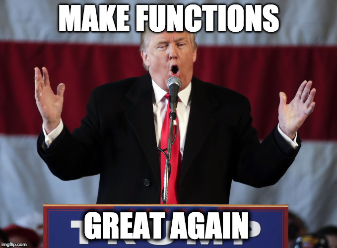
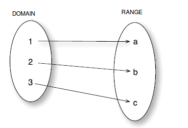
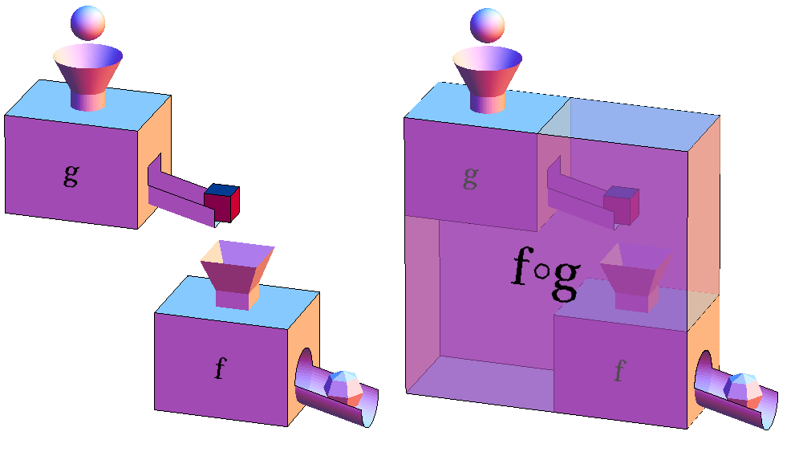
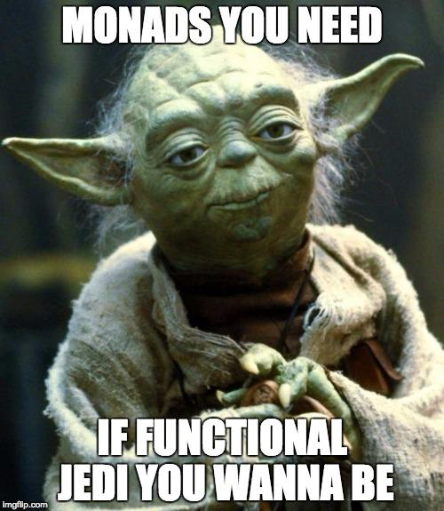
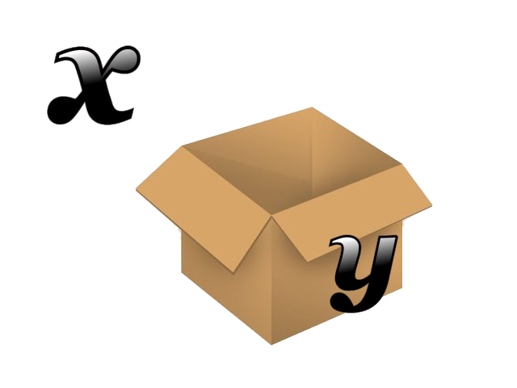

Full name: Microsoft.FSharp.Core.array<_>
Full name: Microsoft.FSharp.Core.Operators.typeof
Full name: Microsoft.FSharp.Core.Operators.log
WTF??!
( What The FUNctional ??! )
Intro to Functional Programming
Stefano Paluello @palutz
Learn functional the "hard" way
(High level, abstract, agenda)
- Hard => no watered-down version
- ( Fast paced ) Intro of functional programming concepts
- Not focusing on any particular language or implementation
- Examples in pseudo-code (javacript-like)
What is Functional Programming?

Functional programming is a declarative programming paradigm that emphasizes the evaluation of expressions , rather than execution of commands.
The expressions in these languages are formed by using functions to combine basic values. [Hutton ed. 2002]
Imperative vs Declarative
Imperative
1: 2: 3: 4: 5: 6: |
|
Declarative
1:
|
|
Core concepts
- Functions as first-class citizen
- Immutability
- Purity
- Referential transparency
First class ? Purity? Referen..what ???

Don't worry! It's all about ...

Functions as first-class citizen
- pass functions as arguments
- return functions as result
- bind functions to a variable (name)
- store functions in data structure
- support function literals (aka, anonymous functions)
- strive to use pure functions
A bit of FP jargon
-
HOF (High order functions)
- Functions that take other functions as arguments or returns them as results
-
Pure functions
- function result depends only on the input received
function does not cause any (observable) side effects
"First-class" examples
(Using Javascript as pseudo-language)
1: 2: 3: 4: 5: |
|
"First-class" examples
(High Order functions)
1: 2: 3: 4: 5: 6: 7: 8: 9: 10: 11: 12: 13: 14: 15: 16: 17: |
|
"First-class" examples
Anonymous functions (or literals)
It's a function declared without any named identifier to refer to it.
1: 2: 3: |
|
Pure functions
(or Mathematical functions )
- A pure function ALWAYS gives the same result for a given input value
- A pure function depends only on the input provided to produce the result
- A pure function has no (observable) side effects
Pure functions
A (pure) function maps the domain onto the range

(pure) Function doesn't have any effect on the input value(s)
Side effects
x++
(syntactic sugar for x = x + 1 )
Why can't we do that in FP ???
Immutability
Immutable data => Unchanging over time or unable to change
Don't be so scared: it's already there in almost any language (a string is immutable)
1: 2: 3: 4: 5: |
|
NO Side effects
The input (x) is not changed
We create a new value and maps the output with the input
y = x + 1
Pure not pure?
1: 2: 3: 4: |
|
Is the function Y pure?
Pure not pure?
1: 2: 3: 4: |
|
Is the function Y pure?
Pure not pure?
1: 2: 3: 4: 5: 6: 7: |
|
Is the function pure?
Pure not pure?
1: 2: 3: |
|
Pure or not?
Pure not pure?
1: 2: |
|
Pure or not?
Why pure is so important ?
- Functions are easy to cache
- Functions are easy to port and the code is auto-documenting
- Functions are easy to test
- Functions can be parallelized with (almost) no effort
- Referential transparency (!!!)
Pure vs impure
1: 2: 3: 4: 5: 6: 7: 8: 9: 10: 11: 12: 13: 14: 15: |
|
Referential transparency
1: 2: 3: 4: 5: |
|
Tricky part of math functions
- Input and output values are immutable!
- Math functions always have only one input and one output
Core concepts (2)
- Currying (not the spice)
- Partial application
- Functions composition
Currying
AKA: how to deal with only one input and one output
[Simple mode on]
You can call a function with LESS araguments and you will get back another functions with the remaining arguments
[Simple mode off]
Currying
(this is more pseudo code than js)
1: 2: 3: 4: 5: |
|
Partial function application
(AKA, currying on steroids)
Currying works decomposing a function in smaller chunks, one parameter at time.
Partial application use the same concept, but with more parameters (eg. 3 out of 5)
You can design library with partial function in mind (ordering the parameter)
Functions composition

Functions composition
Short explanation...
1: 2: 3: 4: 5: |
|

Mondas' hype
Monads is the most discussed, feared and (in)famous concept behind functional programming.
DISCLAIMER: you don't need to use Monads to start programming in a functional way.
DISCLAIMER2: understanding them won't hurt you and could be beneficial ;-)
Never heard about Monads, why hype?

PS: not aiming to be YATAM (Yet Another Tutorial About Monads), just a fast explanation (hopefully)
What is a Monad?
A Monad is just a monoid in the category of the endofunctors
Making it easier...
Let's make some assumptions:
- We all know what is a category (general speaking)
- We don't know monoid, hence we call it x
- We don't know endofunctors, hence we call it y
And... What do we get it here?
A Monad is just a x in the category of y

Think about Monad as a "container"
Category theory
Let's not even start:
Monoid, Functors, Applicatives, Monads...
And this is the "cheat sheet"..

Source: HaskellWiki (again...)
Most (in)famous Monads
- Writer Monad
- Reader Monad
- State Monad
Writer Monad
- Bind a value in the Monad
- Manage alongside a writer (usually a log)
- Compose all your operations
- get the results and the log
Reader Monad
- Particular monad: bind only one value
- add functions to the monad and then apply to a state
- workflow: get the f out of the Reader, pass in the state s, apply f to s => Reader2
- get the function from Reader2, run it (pass a State), get the new value out
State Monad
- it's a ReadWrite Reader Monad
- get State with get , change State with put
- workflow: run to get the function f, apply f to State s
- ... : get back the State Monad => ([result of f], modified State)

Thank you!
Made with FsReveal